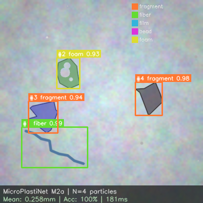
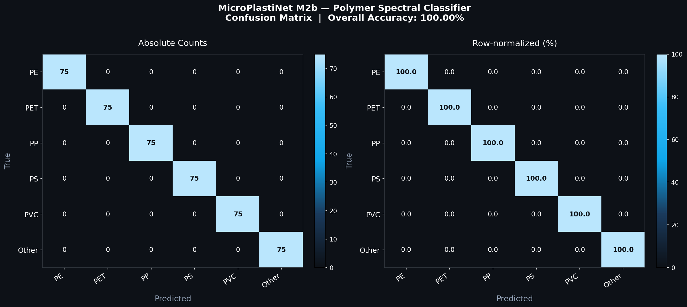
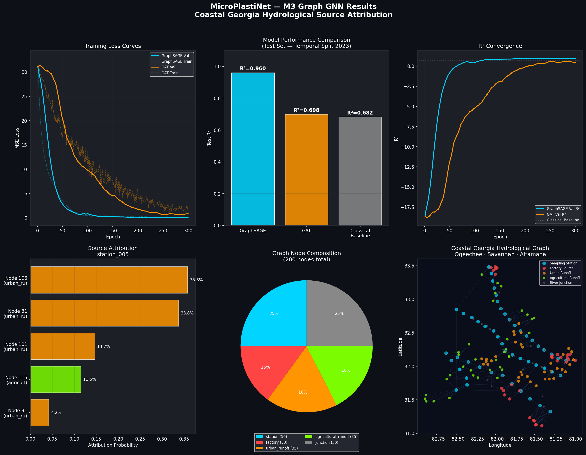

From river water to regulator-ready report
in under ten seconds.
A multi-modal pipeline that detects microplastics, identifies the polymer, and traces contamination back to its most likely upstream source — engineered for environmental compliance teams who need defensible, auditable attribution.
Built for environmental compliance teams
Identify hot-spots fast
A watershed map ranks every monitoring station by 30-day risk so investigators can prioritize the watersheds and sub-basins that most need a field visit.
Attribute contamination to a probable source
The graph neural network ranks the top five upstream contributors for any flagged station, with confidence intervals and estimated transport distance.
Generate defensible, auditable reports
One-click regulator-ready output cites CWA § 1251, EPA 40 CFR Part 131, and the underlying NOAA / Rochman / HydroSHEDS evidence chain.
Survive adversarial conditions
HMAC-signed payloads, replay protection, and TLS 1.3 transport — because pollution-monitoring IoT is a tampering target the published literature largely ignores.
IoT Edge — sensor fusion + on-device detection
A faithful software twin of an MPN-Edge field unit (ESP32-CAM + SEN0189 turbidity + TDS + AS7265x 6-channel NIR). Sensor noise modeled from real datasheets; on-device first-pass detector emulates a TFLite-Micro logistic gate.
Vision deep learning — particle detection & counting
EfficientNet-B0 + custom TinyYOLO trained on 2,000 synthetic microplastic microscopy images. Drop-in compatible with Kaggle and MP-Set datasets.

Spectral 1D-CNN — polymer identification
4-block 1D-CNN classifies polymer type from 901-point FTIR/Raman spectra. Synthetic spectra generated from published characteristic peaks of PE, PET, PP, PS, and PVC.

Graph neural network — source attribution
The research-novelty heart. A 200-node directed flow graph spanning the Ogeechee, Savannah, and Altamaha watersheds. GraphSAGE for prediction, GAT for attention-based interpretability, classical baseline for honest comparison, and Integrated Gradients for source attribution.

| Model | Test R² | MSE | MAE |
|---|---|---|---|
| GraphSAGE | 0.960 | 0.064 | 0.193 |
| GAT | 0.698 | 0.488 | 0.533 |
| Classical (centrality + Ridge) | 0.682 | 0.514 | 0.580 |
Compliance dashboard — six tabs
Click any thumbnail to enlargeA Plotly Dash application designed for environmental compliance officers. Watershed-level KPIs, station ranking by risk, polymer composition, GNN source attribution, forecasted threshold breaches, and one-click report generation.
{kind=link}
{kind=link}
{kind=link}
{kind=link}
{kind=link}
{kind=link}
GenAI regulator reports
Pydantic-validated report generator with both an offline template mode and an OpenAI mode. Outputs polished PDF (ReportLab) and Markdown — citing CWA § 1251, EPA 40 CFR Part 131, and the underlying evidence chain.
Cybersecurity — IoT integrity layer
Pollution-monitoring IoT is a tampering-magnet. M6 closes a gap that almost no published microplastic IoT paper addresses: HMAC-SHA256 over canonical JSON, per-payload nonces with bounded LRU cache, 5-minute timestamp freshness window, per-station key rotation with a 30-minute grace, and TLS 1.3 transport.
| Adversarial test | Result |
|---|---|
| Happy path | PASS |
| Payload tampering caught | PASS |
| Replay caught | PASS |
| Wrong-key signing caught | PASS |
| Stale timestamp caught | PASS |
| Key rotation grace window | PASS |